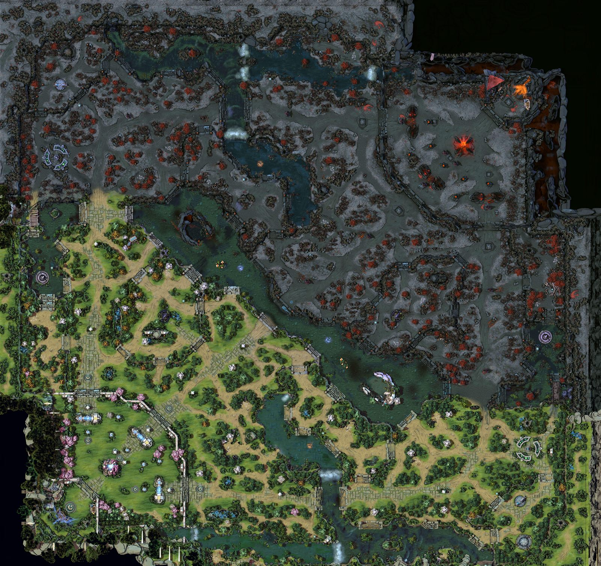

Dota 2 Map
Select a marker to learn what it is. Move the match clock to see runes, neutral camps and Roshan change during a match.

Match clock
Move the slider or press Play. The map above changes with the minute of the match.
Day